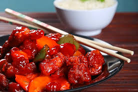

UN CLÁSICO CON SABOR INTENSO
La carne de cerdo agridulce es uno de los platos más representativos de la gastronomía china, conocido por su equilibrio entre el dulce y el ácido. Aunque moderno en estilo, sus raíces se remontan a técnicas de cocina usadas desde la antigüedad.
INGREDIENTES TRADICIONALES
- Trozos de cerdo empanizados
- Pimientos rojos y verdes
- Piña (opcional)
- Salsa agridulce (kétchup, vinagre, azúcar y soya)
- Jengibre y ajo
PREPARACIÓN
El cerdo se fríe hasta quedar crujiente, y luego se mezcla con la salsa agridulce y las verduras en el wok. El resultado es un plato colorido, con aroma y sabor inolvidables.